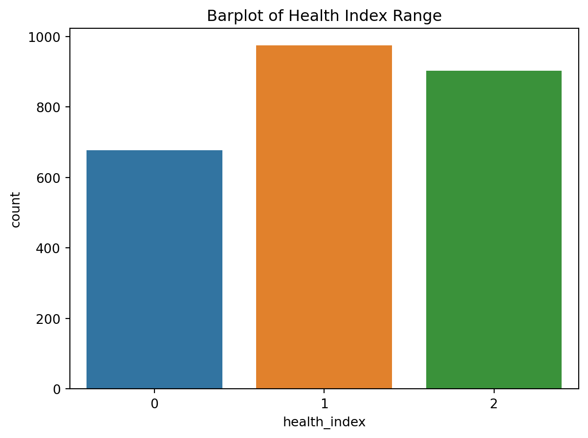
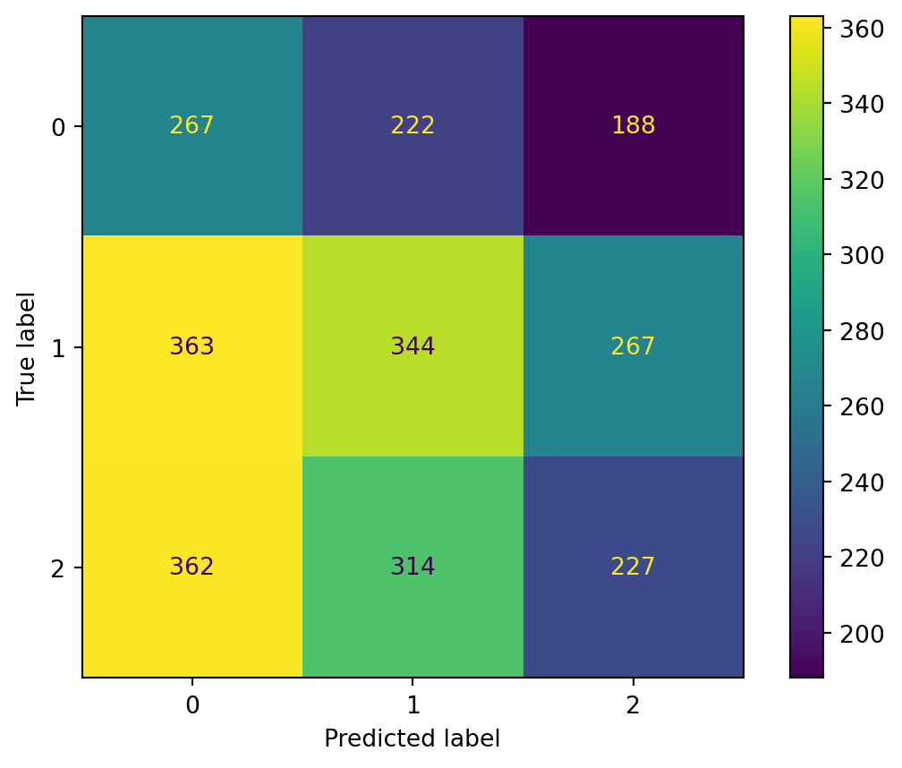
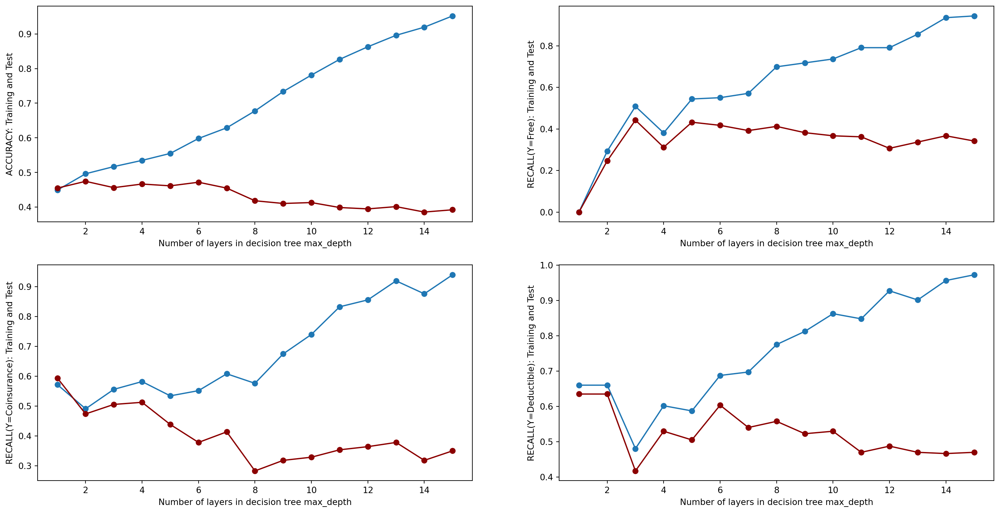
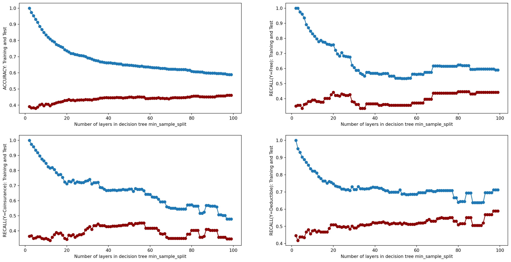
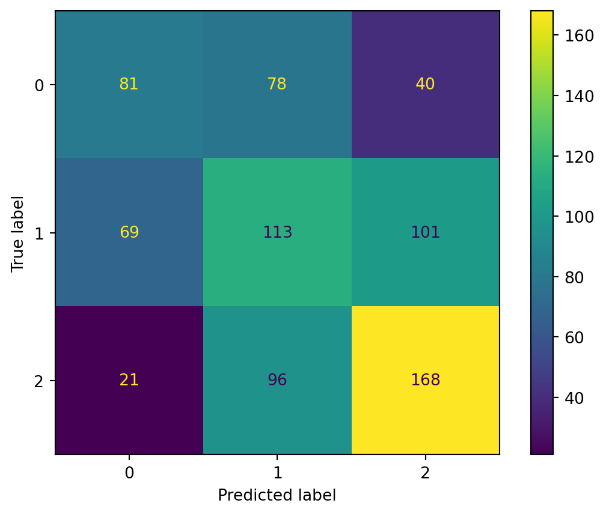
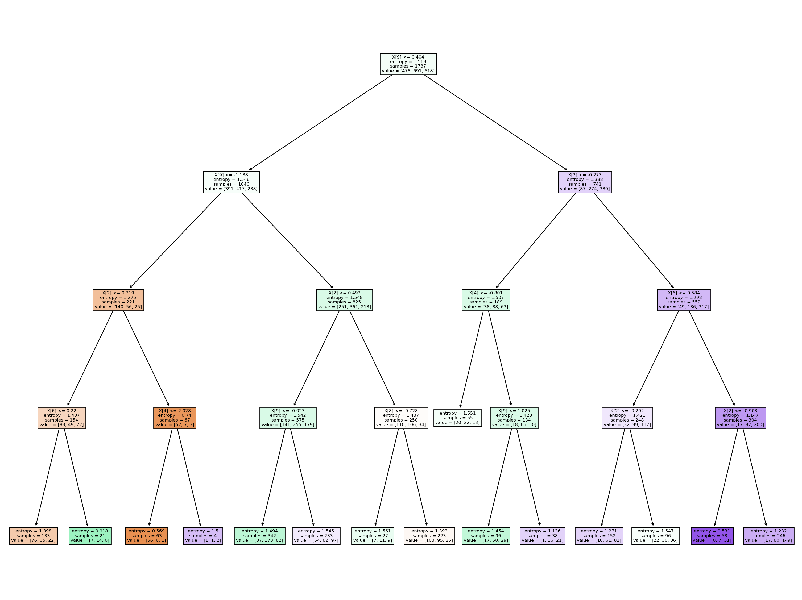

flowchart TD
A[Spend >20hrs/week] -- Yes --> C[A!]
A[Spend >20hrs/week] -- No --> D[Desire of getting A?]
D -- Yes --> E[Attendence to lecture?]
D -- No --> F[No A!]
E -- Yes --> G[A!]
E -- No --> H[No A!]
A tree has many analogies in real life, and it turns out that it has influenced a wide area of machine learning, covering both classification and regression. In decision analysis, a decision tree can be used to visually and explicitly represent decisions and decision making. As the name goes, it uses a tree-like model of decisions. Before jumping into a simple example, let’s first take a look at some important terminologies in Decision Tree algorithm.
| Terminology | Meaning | |
|---|---|---|
| Root Node | Represents entire population | |
| Spliting | Process of dividing sample | |
| Decision Node | Node splits into further sub (children) nodes | |
| Leaf Node | Last stage of node (output label) | |
| Pruning | The opposite process of splitting |
Cheat-Sheet: DT terminologies:
How can an algorithm be represented as a tree
For this let’s consider a very basic example that predicting whether a student will get an A in ANLY501. Below model uses 3 features/attributes/columns, namely desire, attendence and time spent weekly(20hrs). A decision tree is drawn upside down with its root at the top. In this image, the text in black represents a condition/internal node, based on which the tree splits into branches/ edges. The end of the branch that doesn’t split anymore is the decision/leaf, in this case, whether the student get an A or not is represented as text respectively.
flowchart TD
A[Spend >20hrs/week] -- Yes --> C[A!]
A[Spend >20hrs/week] -- No --> D[Desire of getting A?]
D -- Yes --> E[Attendence to lecture?]
D -- No --> F[No A!]
E -- Yes --> G[A!]
E -- No --> H[No A!]
What is actually going on in the background?
A real dataset will have a lot more features and the above example will just be a branch in a much bigger tree, but we can’t ignore the simplicity of this algorithm. The feature importance is clear and relations can be viewed easily. This methodology is more commonly known as learning decision tree from data and above tree is called Classification tree as the target is to classify student as getting an A or not.
Decision tree learning or growing a tree involves deciding on which features to choose and what conditions to use for splitting, along with knowing when to stop. As mentioned above, a decision tree is composed of nodes, and those nodes are chosen looking for the optimum split of the features. For that purpose, different criteria exist. In the decision tree Python implementation of the scikit-learn library, this is made by the parameter ’criterion‘. This parameter is the function used to measure the quality of a split and it allows users to choose between ’gini‘ or ’entropy‘.
-Gini Index
The gini impurity is calculated using the following formula:
\[ GiniIndex = 1 - \sum_{j}p^2_{j}
\]
Where \(p_{j}\) is the probability of class \(j\).
The gini impurity measures the frequency at which any element of the dataset will be mislabelled when it is randomly labeled.
Entropy
The entropy is calculated using the following formula: \[Entropy = -\sum_{j}p_{j}*log_{2}*p_{j}
\]
Where, as before, \(p_{j}\) is the probability of class \(j\).
Entropy is a measure of information that indicates the disorder of the features with the target. Similar to the Gini Index, the optimum split is chosen by the feature with less entropy. It gets its maximum value when the probability of the two classes is the same and a node is pure when the entropy has its minimum value, which is 0.
Now let us come back to our reord dataset and implement the Decision Tree algorithm on it to classify the outcome variable – Health Index. Since the outcome variable health index is a continuous variable which takes value from 0-100 and also since we want to do a classficication instead of a regression here, I binned the column to multiple classes and assign them with a label. The following table shows the range, count and ratio of each label：
| Health Index | Label | count | Probability |
|---|---|---|---|
| Below 60 | 0 | 974 | 0.381 |
| 60-75 | 1 | 903 | 0.354 |
| >75 | 2 | 677 | 0.265 |
According to both the printed table and barplot, we can say that the distribution of three labels is pretty balanced.
import pandas as pd
import numpy as np
import matplotlib.pyplot as plt
import seaborn as sns
from sklearn.metrics import confusion_matrix, ConfusionMatrixDisplay
from sklearn import tree
from sklearn.metrics import accuracy_score
from sklearn.metrics import precision_score
from sklearn.metrics import recall_score
import random
from sklearn.feature_selection import VarianceThreshold
from sklearn.model_selection import train_test_splitdf = pd.read_csv('/Users/liumingqian/anly-501-project-liumingqian0511/data/01-modified-data/rand.csv')
conditions = [
(df['ghindxx'] < 60),
(df['ghindxx'] >= 60) & (df['ghindxx']<75),
(df['ghindxx'] >= 75),
]
values = [0,1,2]
df['health_index'] = np.select(conditions, values)
distribution = df['health_index'].value_counts().reset_index().rename(columns={'index': 'health_index','health_index':'count'})
distribution['proportion'] = distribution['count']/len(df)
print('-----------------------------------')
print(distribution)
print('-----------------------------------')
ax = sns.barplot(x = 'health_index', y = 'count', data = distribution)
ax.set_title('Barplot of Health Index Range')
plt.show()-----------------------------------
health_index count proportion
0 1 974 0.381363
1 2 903 0.353563
2 0 677 0.265074
-----------------------------------
def random_classifier(y_data):
random.seed(909391)
ypred=[]
max_label=np.max(y_data)
for i in range(0,len(y_data)):
ypred.append(np.random.choice(np.arange(max_label+1), p = distribution['proportion']))
return ypreddef confusion_plot(y_data,y_pred):
print('----------------------Classification Report---------------------------')
print('ACCURACY:', accuracy_score(y_data, y_pred))
print('RECALL (Y = Free):', recall_score(y_data, y_pred,labels=[0], average='weighted'))
print('RECALL (Y = Coinsurance):', recall_score(y_data, y_pred,labels=[1], average='weighted'))
print('RECALL (Y = Deductible):', recall_score(y_data, y_pred,labels=[2], average='weighted'))
print('PRECISION (Y = Free):', precision_score(y_data,y_pred,labels=[0],average='weighted'))
print('PRECISION (Y = Coinsurance):', precision_score(y_data,y_pred,labels=[1], average='weighted'))
print('PRECISION (Y = Deductible):', precision_score(y_data,y_pred,labels=[2], average='weighted'))
print('--------------------------Confusion Matrix-----------------------------')
print(confusion_matrix(y_data,y_pred))
ConfusionMatrixDisplay.from_predictions(y_data, y_pred)
plt.show()true_label = df['health_index']
predicted_label = random_classifier(true_label)
confusion_plot(true_label,predicted_label)----------------------Classification Report---------------------------
ACCURACY: 0.32811276429130776
RECALL (Y = Free): 0.39438700147710487
RECALL (Y = Coinsurance): 0.3531827515400411
RECALL (Y = Deductible): 0.2513842746400886
PRECISION (Y = Free): 0.2691532258064516
PRECISION (Y = Coinsurance): 0.39090909090909093
PRECISION (Y = Deductible): 0.33284457478005863
--------------------------Confusion Matrix-----------------------------
[[267 222 188]
[363 344 267]
[362 314 227]]
conditions = [
(df['plan_type'] == 'Free'),
(df['plan_type'] == 'Coinsurance'),
(df['plan_type'] == 'Deductible'),
(df['plan_type'] == 'Catastrophic')
]
values = [0,1,2,3]
df['plan'] = np.select(conditions, values)Y = df['health_index']
X = df.drop(columns=['person','plan_type','catastrophic','free','health_index','ghindxx','face_to_face_visit','outpatient_expenses','totadm','total_expenses','inpdol_inf'])
ux = np.mean(X,axis = 0) # NORMALIZE X
sx = np.std(X,axis = 0)
for i in range(10):
X.iloc[:,i] = (X.iloc[:,i] - ux[i])/sx[i]
#X['plan'] = df['plan']
x_train, x_test, y_train, y_test = train_test_split(X, Y, test_size=0.3, random_state=0)
print("TRAINING SHAPES:",x_train.shape,y_train.shape)
print("TEST SHAPES:",x_test.shape,y_test.shape)TRAINING SHAPES: (1787, 11) (1787,)
TEST SHAPES: (767, 11) (767,)Hyperparameter tuning consists of finding a set of optimal hyperparameter values for a learning algorithm while applying this optimized algorithm to any data set. That combination of hyperparameters maximizes the model’s performance, minimizing a predefined loss function to produce better results with fewer errors. In this section, I am going to tune max_depth, min_sample_split and criterion parameter.
Max_depth Tuning:
The first hyperparameter to tune in the Decision Tree is max_depth. It indicates how deep the decision can be. The deeper the tree, the more splits it has and meanwhile captures more information about the data. However, in general a decision tree overfits for large depth values. When the tree perfectly predicts all the training data, it failes to generalize the findings on new data.
Min_sample_split Tuning
The hyperparameter min_sample_split is used to set the minimum number of samples required to split an internal node. This can vary between two extremes, i.e., considering only one sample at each node vs. considering all of the samples at each node - for a given attribute.
Note: max_depth and min_samples_split are also both related to the computational cost involved with growing the tree. Large values for these parameters can create complex, dense, and long trees. For large datasets, it may become extremely time-consuming to use default values.
Criterion
Supported Criterion are ‘Gini’ and ‘Entropy’.
def tunningResult(y_train, y_test, yp_train, yp_test,test_result, train_result):
accuracy_train = accuracy_score(y_train, yp_train)
recall_0_train = recall_score(y_train, yp_train,labels=[0], average='weighted')
recall_1_train = recall_score(y_train, yp_train,labels=[1], average='weighted')
recall_2_train = recall_score(y_train, yp_train,labels=[2], average='weighted')
#recall_3_train = recall_score(y_train, yp_train,labels=[3], average='weighted')
accuracy_test = accuracy_score(y_test, yp_test)
recall_0_test = recall_score(y_test, yp_test,labels=[0], average='weighted')
recall_1_test = recall_score(y_test, yp_test,labels=[1], average='weighted')
recall_2_test = recall_score(y_test, yp_test,labels=[2], average='weighted')
#recall_3_test = recall_score(y_test, yp_test,labels=[3], average='weighted')
return [accuracy_train, recall_0_train,recall_1_train,recall_2_train],[accuracy_test,recall_0_test,recall_1_test,recall_2_test]test_results=[]
train_results=[]
for depth in range(1,16):
model = tree.DecisionTreeClassifier(max_depth=depth)
model = model.fit(x_train,y_train)
yp_train=model.predict(x_train)
yp_test=model.predict(x_test)
a,b = tunningResult(y_train, y_test, yp_train, yp_test,test_results, train_results)
# print(y_pred.shape)
test_results.append([depth]+b)
train_results.append([depth]+a)
test_results = pd.DataFrame(test_results)
train_results = pd.DataFrame(train_results)def resultPlot(train_results,test_results,param):
fig,((ax1,ax2),(ax3,ax4)) = plt.subplots(2, 2)
fig.set_size_inches(20,10)
ax1.plot(train_results[0],train_results[1],'-o')
ax1.plot(test_results[0],test_results[1],'-o',color = 'darkred')
ax1.set_xlabel("Number of layers in decision tree" + param)
ax1.set_ylabel("ACCURACY: Training and Test")
ax2.plot(train_results[0],train_results[2],'-o')
ax2.plot(test_results[0],test_results[2],'-o',color = 'darkred')
ax2.set_xlabel("Number of layers in decision tree" + param)
ax2.set_ylabel("RECALL(Y=Free): Training and Test")
ax3.plot(train_results[0],train_results[3],'-o')
ax3.plot(test_results[0],test_results[3],'-o',color = 'darkred')
ax3.set_xlabel("Number of layers in decision tree" + param)
ax3.set_ylabel("RECALL(Y=Coinsurance): Training and Test")
ax4.plot(train_results[0],train_results[4],'-o')
ax4.plot(test_results[0],test_results[4],'-o',color = 'darkred')
ax4.set_xlabel("Number of layers in decision tree" + param)
ax4.set_ylabel("RECALL(Y=Deductible): Training and Test")resultPlot(train_results,test_results, ' max_depth')
test_results=[]
train_results=[]
for num_sample in range(2,100):
model = tree.DecisionTreeClassifier(min_samples_split=num_sample )
model = model.fit(x_train,y_train)
yp_train=model.predict(x_train)
yp_test=model.predict(x_test)
a,b = tunningResult(y_train, y_test, yp_train, yp_test,test_results, train_results)
# print(y_pred.shape)
test_results.append([num_sample]+b)
train_results.append([num_sample]+a)
test_results = pd.DataFrame(test_results)
train_results = pd.DataFrame(train_results)resultPlot(train_results,test_results, ' min_sample_split')
test_results=[]
train_results=[]
for crit in ['gini','entropy']:
model = tree.DecisionTreeClassifier(criterion=crit)
model = model.fit(x_train,y_train)
yp_train=model.predict(x_train)
yp_test=model.predict(x_test)
a,b = tunningResult(y_train, y_test, yp_train, yp_test,test_results, train_results)
# print(y_pred.shape)
test_results.append([crit]+b)
train_results.append([crit]+a)
test_results = pd.DataFrame(test_results)
train_results = pd.DataFrame(train_results)
print(test_results) 0 1 2 3 4
0 gini 0.387223 0.366834 0.349823 0.438596
1 entropy 0.434159 0.386935 0.445230 0.456140Considering the result from the accuracy and recall, I decided to choose a max_depth value of 4. In the plots we can see that when max_depth = 4, the accuracy of the prediction is stable and the recall for all three labels is high. For the hyperparameter min_samples_split, the optimized samples size for splitting is around 60 where the training and testing accuracy is parallel to each other and stabalized. Lastly, the criterion I will chose for the final model is entropy because it presents slightly higher accuracy.
Finally, I used the set of optimized hyperparameters of max_depth, min_samples_split and criterion to fit a model on the label and the outputs are showing below. From the classification report, we can see that the accuracy of the testing set is around 47.2% which is only 14% higher than the accuracy of the baseline model. This result is unsatisfying for a three-label dataset. I think it will be better if I performed a Decision Tree Regression on the outcome variable without binning it to labels. Because the relationship between the x features and the outcome variable might be very linear which a classification cannot capture.
At this point, a decision tree classification is complete. A model that meant to predict new data points on their label is trained using the existing dataset. When we input a value or a set of values of the new features (X variable) into the model, the likelihood the the model outputting the true label is 47.2%. I have to admit that the accuracy here is not satisfying. But the process of how to apply Decision Tree classification on data is wholely performed and the overall accuracy has increased compared to the baseline model.
model = tree.DecisionTreeClassifier(max_depth = 4, min_samples_split = 60, criterion='entropy')
model = model.fit(x_train,y_train)
yp_train=model.predict(x_train)
yp_test=model.predict(x_test)confusion_plot(y_test,yp_test)----------------------Classification Report---------------------------
ACCURACY: 0.47196870925684486
RECALL (Y = Free): 0.40703517587939697
RECALL (Y = Coinsurance): 0.3992932862190813
RECALL (Y = Deductible): 0.5894736842105263
PRECISION (Y = Free): 0.47368421052631576
PRECISION (Y = Coinsurance): 0.39372822299651566
PRECISION (Y = Deductible): 0.5436893203883495
--------------------------Confusion Matrix-----------------------------
[[ 81 78 40]
[ 69 113 101]
[ 21 96 168]]
from sklearn import tree
def plot_tree(model):
fig = plt.figure(figsize=(20,15))
_ = tree.plot_tree(model,
filled=True)
plt.show()
plot_tree(model)